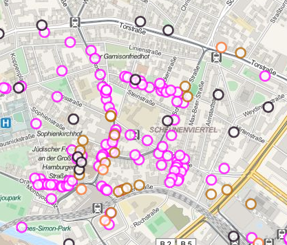
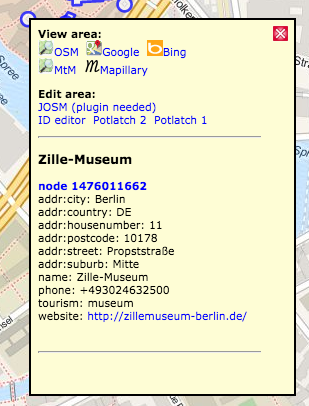

On the screenshot above you see a number of POIs that were selected from the list with available shops (the map shows a part of Berlin).
If you start selecting pois in the list, you might see (on the top of the main screen) the indication that you have to zoom in in order for the pois appear on the screen.
If you start selecting pois in the list, you might see (on the top of the main screen) the indication that you have to zoom in in order for the pois appear on the screen.

On the right you see the information (again the map is Berlin) that is available for the Zille-Museum.
From the main menu I have choosen Tourism and then selected the museum tag in the poi-list.
If there is a website available for this poi, you can click it to get to that website (in another window).
The same is true for any wikipedia-link that might be available.
The View area of the popup allows you tho choose from 5 different map types. The first three are self explanatory, MtM is a map which shows the tagging that is used for the roads in the same area and Mapillary is an (open-source) alternative to Googles Streetview.
The Edit area opens the view window of the current map into the editor of your choice, making it possible to correct errors you have spotted.